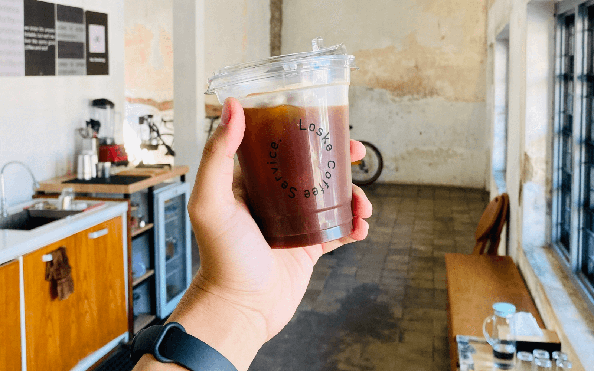
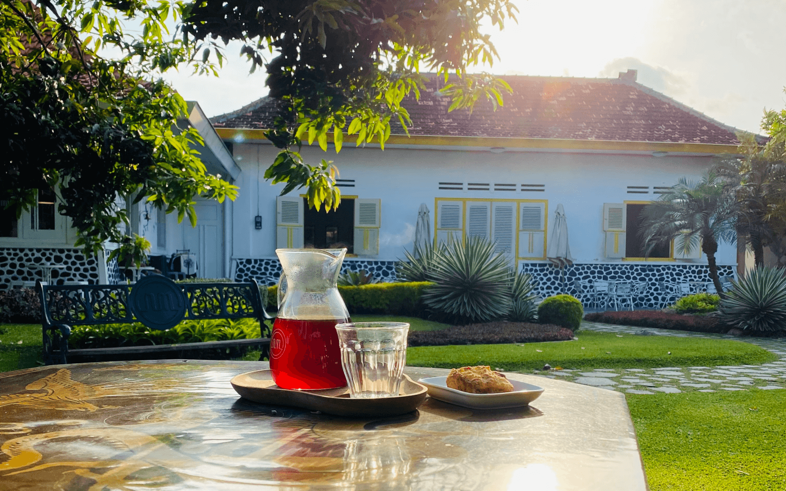
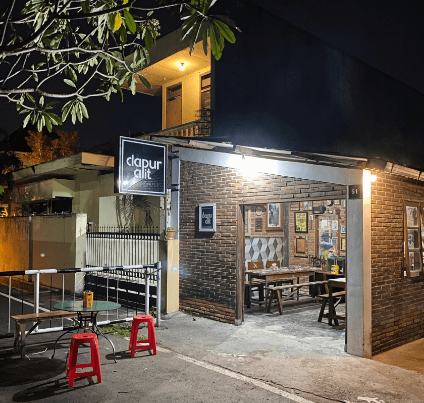
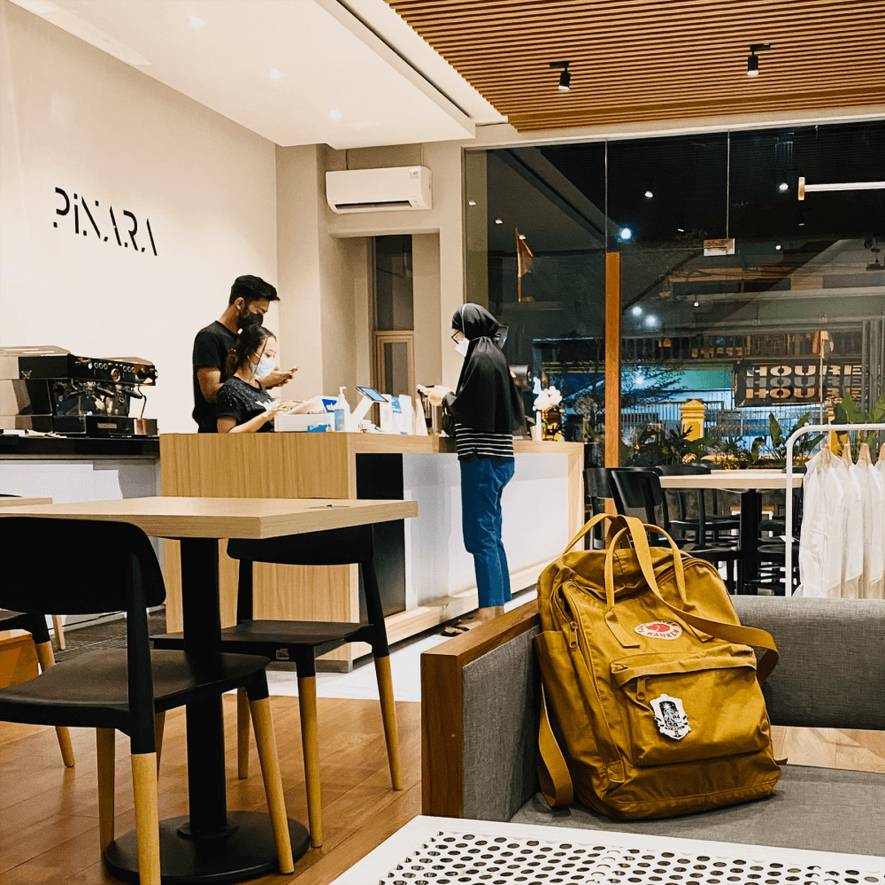

Tempat tempat yang memberikan kesan
Tempat tempat favorit kami, tempat tempat yang biasa kami gunakan untuk ngobrol, menikmati suasana, kuliner, kopi dan mengisi waktu dengan sekedar bermain sosial media melalui handphone.
Beberapa tempat menjadi langganan kami, beberapa tempat sesekali kami kunjungi karena jarak yang cukup jauh.

Coffee Shop dari keprabon yang ramah dan selalu menyajikan kopi enak
Dimsum nya enak apalagi Mie Ayam Charsiu nya serasa surga dunia
"Selalu menyenangkan mengunjungi tempat yang tidak direncanakan"
Celetukan kami di perjalanan

Menikmati kopi di halaman rumah mbahmu yang luas dan banyak tanaman

Masakan rumahan yang selalu bikin kangen

Coffee Shop favorit kalau lagi pengen menikmati manual brew